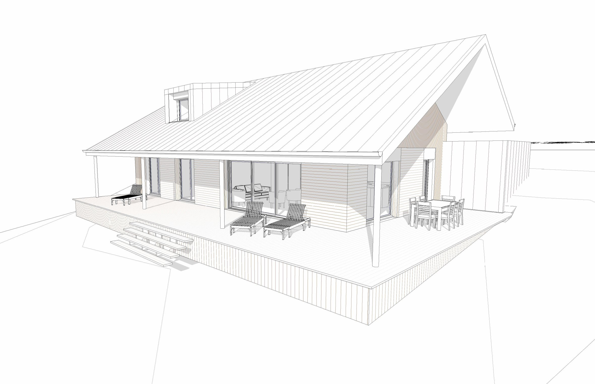
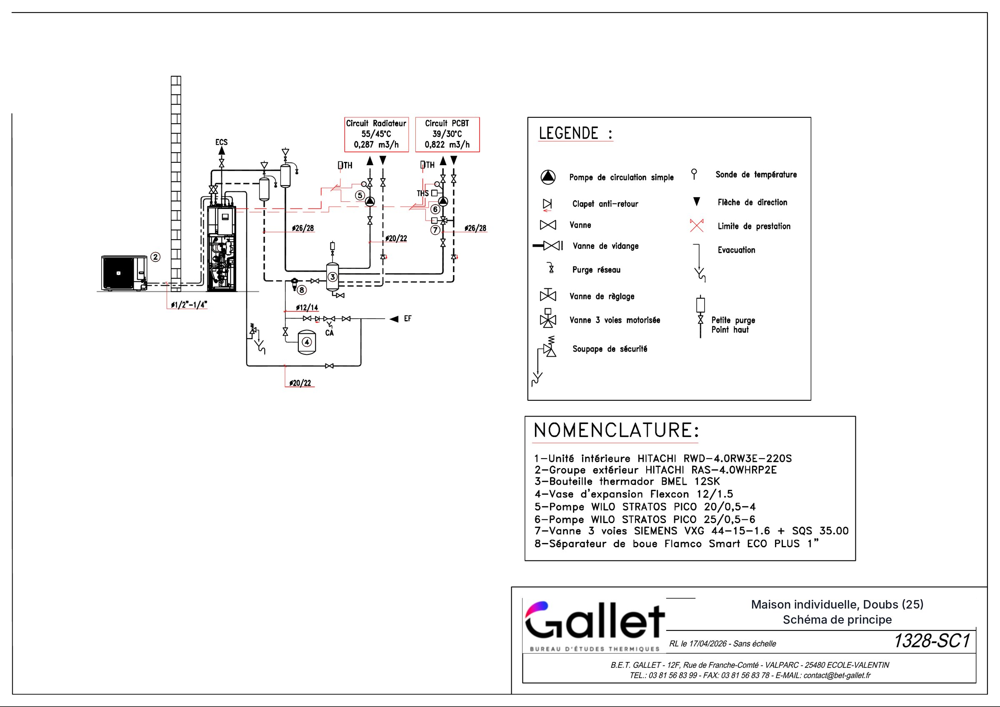
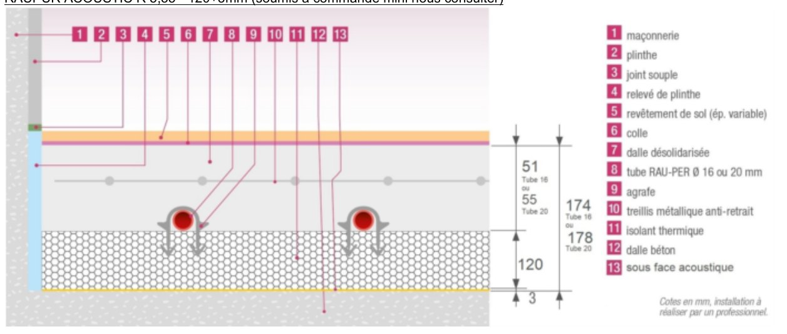
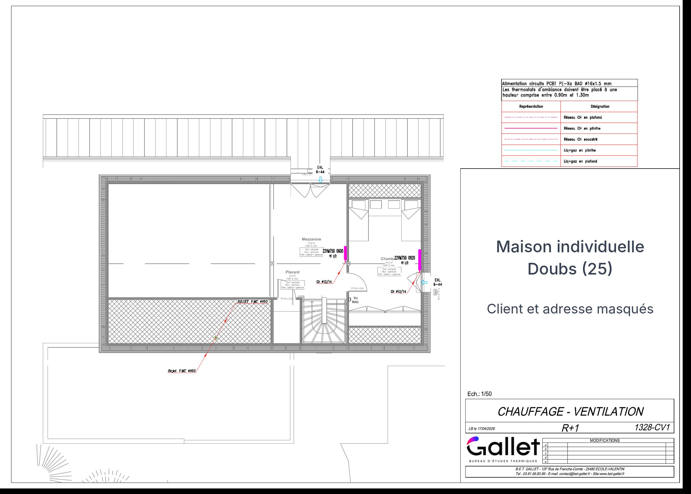
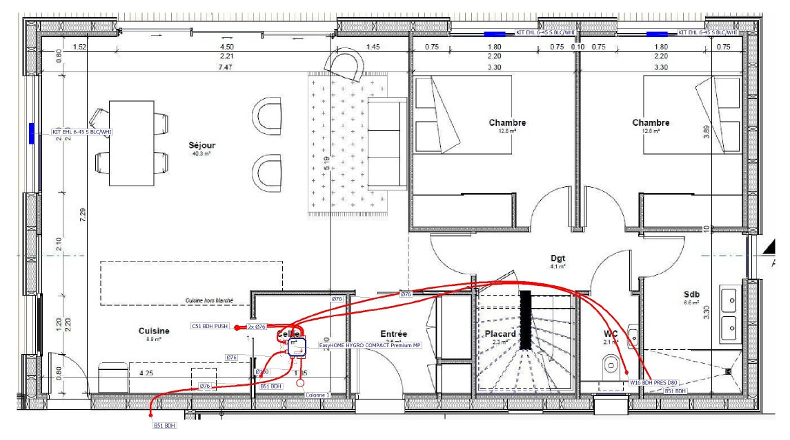
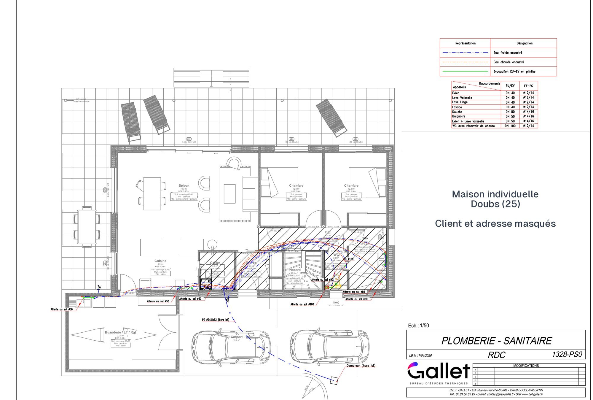
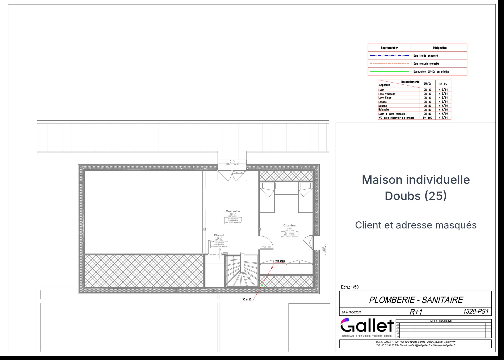

Un projet suivi de bout en bout
À partir des plans de l'architecte, j'ai mené l'étude thermique réglementaire pour le permis de construire, puis l'ensemble des études fluides de la maison, jusqu'aux pièces que les entreprises utilisent pour chiffrer et réaliser les travaux.

Une enveloppe biosourcée performante
Le bâtiment est saisi paroi par paroi dans Visual TTH. L'enveloppe retenue :
- Murs en ossature bois : 200 mm de laine de bois entre montants et 100 mm en doublage intérieur, R = 8,30 m².K/W ;
- Toiture en rampant : 340 mm de laine de bois au total, R = 9,40 ;
- Plancher : 120 mm de polyuréthane projeté sous chape, R = 5,22 ;
- Menuiseries bois-alu double vitrage, Uw = 1,30 W/m².K, avec brise-soleil orientables pilotés automatiquement ;
- Étanchéité à l'air : 0,4 m³/h.m² maximum, à mesurer en fin de chantier.
Les brise-soleil automatiques expliquent le très bon confort d'été. L'attestation RE2020 et la notice thermique, remises au permis puis mises à jour pour la consultation, fixent ces performances aux entreprises.
Dimensionner pièce par pièce
Le calcul des déperditions selon la norme EN 12831, avec −18 °C extérieur, donne la puissance à fournir dans chaque pièce : 10,0 kW au total, soit 23 W/m³. Il sert de base au choix de la pompe à chaleur et des émetteurs.
Pompe à chaleur, plancher chauffant et radiateurs
Une pompe à chaleur air/eau de 10 kW assure le chauffage et l'eau chaude. Deux circuits la desservent, découplés par une bouteille :
- Plancher chauffant au rez-de-chaussée, dimensionné sur le logiciel REHAU : départ à 39 °C, 6 circuits au pas de 20 cm sur un collecteur, 13,7 l/min au total, perte de charge maximale de 3 258 mmCE pour une limite de 3 500 ;
- Radiateurs basse température à l'étage, en régime 55/45 °C : 4 radiateurs pour 3 260 W de besoins.




Une VMC simple flux hygroréglable
Le réseau de ventilation est dimensionné sur Aldes Conceptor : caisson hygroréglable de type B, 4 entrées d'air dans les menuiseries, 5 bouches d'extraction dans les pièces humides et un rejet en toiture en Ø 160 mm.

Eau froide, eau chaude et évacuations
Les diamètres d'alimentation et d'évacuation sont calculés pour chaque appareil, puis reportés sur les plans avec leur tableau de raccordement.


Les pièces écrites
Pour la consultation, j'ai rédigé le descriptif quantitatif du lot chauffage, ventilation, plomberie et sanitaire (25 pages, matériel décrit poste par poste), le cadre de décomposition du prix (DPGF) et la liste des travaux non compris.
Livrables : attestation RE2020 et notice thermique, calcul des déperditions, notes de calcul plancher chauffant, radiateurs et VMC, schéma de principe, 4 plans d'exécution, descriptif quantitatif, DPGF.
Document réel, reproduit avec l'accord du bureau d'études Gallet. Maître d'ouvrage et adresse masqués. Perspective : architecte du projet.